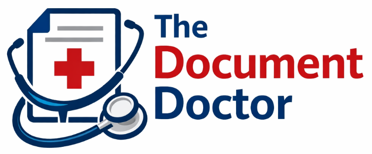

Diagnosing messy SOPs and prescribing scalable documentation systems, curing onboarding headaches one procedure at a time.
Is your documentation actually helping, or quietly hurting your business?
Document Diagnosis is a deep-dive health check of your SOPs and internal documentation. I examine structure, clarity, completeness, and audit readiness to uncover hidden risks, inefficiencies, and knowledge gaps.
You'll receive a plain-English diagnosis and a prioritised treatment plan, so you know exactly what needs fixing, what can wait, and what's already healthy. No guesswork. No over-documenting. Just clarity.
Is your documentation bloated, broken, or impossible to follow?
SOP Surgery is a hands-on service where I repair, restructure, and rewrite your SOPs so they're clear, consistent, and actually usable. I remove ambiguity, close knowledge gaps, and redesign procedures to reflect how your team really works, not how someone thought they worked years ago.
You'll walk away with clean, scalable, audit-ready SOPs that reduce onboarding time, eliminate guesswork, and stand up to real-world use. No band-aids. No copy-paste templates. Just documentation that works.
Not every documentation problem needs surgery, but it does need the right treatment.
Prescriptions is a strategic guidance service that gives you a clear, practical plan to improve your documentation without committing to a full rewrite. Based on your current systems, tools, and goals, I prescribe exactly what to document, how to structure it, and where to focus for maximum impact.
You'll receive tailored recommendations, templates, and next steps your team can act on with confidence, reducing risk, improving consistency, and setting your documentation up to scale. The right treatment, at the right dose.
Not sure what your documentation needs yet?
Book a Free Quote for a no-pressure starting point to discuss your documentation challenges, goals, and timelines. I'll review the basics, ask the right questions, and outline the most suitable service, whether that's a Diagnosis, Surgery, or Prescription.
No obligation. No hard sell. Just clarity on scope, cost, and next steps.